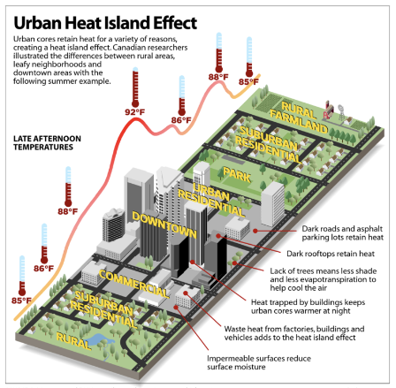
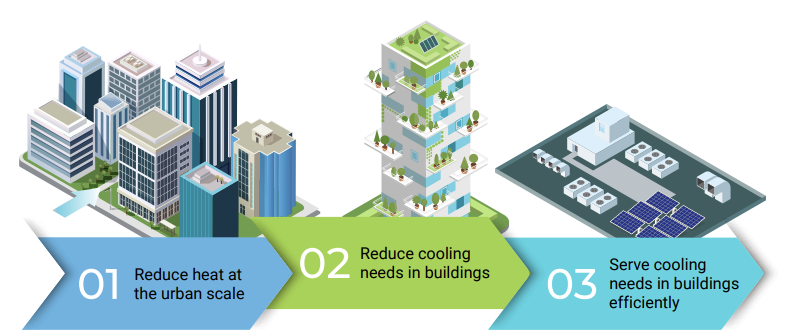
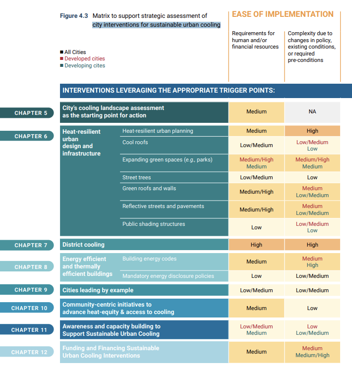
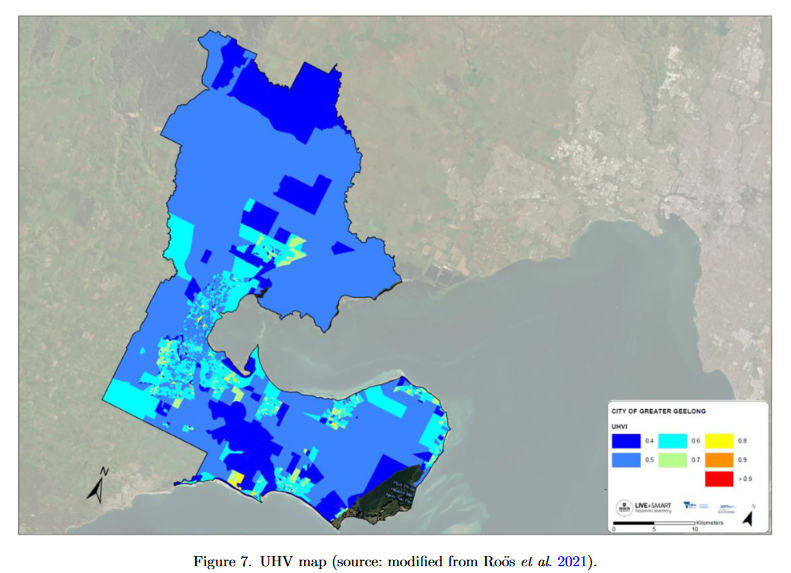

8 week_08 - Temperature and Policy
8.1 Summary
In this week we will discuss about Urban heat Island and how city handle this issue. A phenomena when urban area is significantly hotter than rural area on its surrounding is called Urban Heat Island (UHI) (Takebayashi and Moriyama, 2020).
 source: Earth.Org
Urban heat island are caused by many factors: - Limited vegetation or natural landscape - Urban material absorb and emit solar heat - Building dimensions and configuration trap wind flow that absorb and release heat - Human activities, such as, vehicle and AC usage - Weather and geography Generally, highly concentrated man-made material and limited natural landscape is the major factors of UHI (US EPA, 2014).
Urban Heat Island bring a lot of negative impact on social, economy and environmental globally. For example, heatwave in 1998 in Shanghai increase the mortality rate in urban area up to 27.3/100.000, compared to 7/100.000 in rural area []. Heatwaves in 2003, killed 35.000 lives in Europe with 15.000 fatalities in France alone (Tan et al., 2010). Santamouris (2015), stated that one degree increase of temperature, potentially increase of electrical demand between 0.5%-8.5%.
8.1.1 Global Policy
Urban Heat Island happens globally. A lot of global policy has implicitly and explicitly put this issue into an account. One of the target in goal number 11 of Sustainable Development Goals mention:
Cleaner, greener cities
- Investing in parks and green spaces in urban areas will help to amelioratethe urban heat island effect and improve air quality in urban spaces.
8.1.1.1 Beat the heat handbook
Moreover, United Nation Environment Program has released Beat the Heat handbook. The hand book gives guideline and framework for planner to help cooling their cities. it gives systemic approach to address urban cooling.

source: Beating the Heat: A Sustainable Cooling Handbook for Cities | NDC Action Project (unep.org)
It also has matrix of city interventions for sustainable urban cooling like shown in the image below
 Source: [Beating the Heat: A Sustainable Cooling Handbook for Cities (https://www.unep.org/resources/report/beating-heat-sustainable-cooling-handbook-cities)
Although this handbook presents various intervention alternative with over 20 cities as case study and examples, it is not easy for local government to follow because different cities has different heat temperature and different context. As mentioned earlier that geography can cause different heat in urban context. Dissimilar context and issue should have different policy and planning to solve Urban Heat Island issue. Therefore, assessment on existing environmental condition has to be done with right method and right approach to understand specific solution that the city needs.
8.1.2 Utilising EO data
to assess heat in the city we can utilise earth observation data, like what Fremantle did in their Urban Forest Plan. However, if we are not critical in using EO data for assessing heat, it will fail telling the pain point comprehensively like Fremantle. In Fremantle’s assessment process, they only use one temperature image and aggregated the data. Moreover, it is not reproducible and not clear on what kind of assumption they made in their assessment process.
Thus, in the application part we will discuss some previous research that have utilised EO data and linked with policies to tackle UHI
8.2 Application
8.2.1 Urban Heat Vulnerability
To help decision makers and city planners mitigating UHI phenomena, a reliable UHI vulnerability map is required. UHI vulnerability maps tells us which area in the city that are at risk of UHI. Sidiqui et al. (2022) used high-resolution spatial data, advanced geospatial tools, and socio-demographic data to make UHI vulnerability map ofthe City of Greater Geelong, Australia. It utilise airborne thermal data from Landsat and aerial imagery data to make UHI index maps which then indicated significant hotspot on high building density, industrial areas, and constructed sites. The UHI index maps, then combined with 20 input indicators of heat exposure, population sensitivity, and mobility/adaptive capacity to make Urban Heat Vulnerability (UHV) maps.

source: (Sidiqui et al., 2022)
High vulnerability maps are shown with red (warmer) colour which concentrated on high building density and high population density areas.
This proposed methodology show comprehensive approach by considering multitemporal input data. The landsat scene data were taken from hotest days of summer in 2016 and 2017. (Técher, Ait Haddou and Aguejdad, 2023) has done the similar methodology to assess UHI in # Montpellier Méditerranée, France but with 15 indicators. It indicates that this methodology is reproducible.
8.3 Reflection
- from this week we have learnt that Urban heat Island is a global phenomena that has to be mitigated immediately. Some of global policy has take this issue into an account. United Environment program has release Beat the Heat Handbook as a guideline for planner to help cooling their cities. Although the handbook suggested a lot of intervention and example from cities around the world. Local government might having difficulties to follow the guideline because it has a lot of pages and different urban context might require different intervention.
- Thus, EO data can be utilised to assess UHI vulnerability in a city like it was done by (Sidiqui et al., 2022)
- Sidiqui et al. (2022) application are really helpful to assess the city temperature context and it shown that it is reproducible. What local government can do is adjusting 20 indicators of this methods to adapt with their city context.
- Moreover, data that being used in making UH vulnerability maps is free so developing countries who usually has limited budget can replicate this method
- however, making vulnerability maps might not solve the problem right away but it can bring a really beneficial information. Thus, local government can make a specific action plan based on vulnerability and urgency degree.